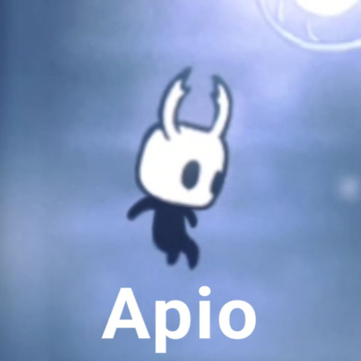

Hola, soy David y esta es mi pagina web, haz click en las flecha para abrir las secciones
algunos ejemplos de textos
Este es el titulo principal
Este es el subtitulo
y puedo seguir asi hasta seis tamaños
y este es el titulo mas pequeño
Este es un parrafo de texto, puedo escribir lo que quiera aqui y se mostrara en la pagina web, ademas puedo resaltar algo importante
"Y puedo hacer citas como en una monografia"
algunos ejemplos de imagenes
Tambien puedo poner imagenes

Este es un meme del caballerito
Este es el caballerito posando
algunas ejemplos de listas y vinculos
Tambien puedo hacer listas, como la receta de unanapolitana de fresa y crema
- 1 paquete de GALLETAS MORENITAS NESTLÉ® (23 g)
- 2 cucharadas de queso crema (28 g)
- 2 cucharadas de LECHE CONDENSADA LA LECHERA® (40 g)
- 2 fresas frescas, cortadas en láminas (14 g)
- En un recipiente mezcla la LECHE CONDENSADA LA LECHERA® con el queso crema y con ayuda de un tenedor bate hasta que integres bien.
- Sobre una galleta MORENITAS NESTLÉ® esparce la mitad de la crema y encima pon láminas de fresas en partes iguales.
Tambien puedo poner vinculos a otras paginas web, aqui esta el vinculo a la receta
Si tienes alguna idea de que deberia agregarle mandamela a este gmail o a este whatsapp
si no funciona el gmail puedes hacer click en este link